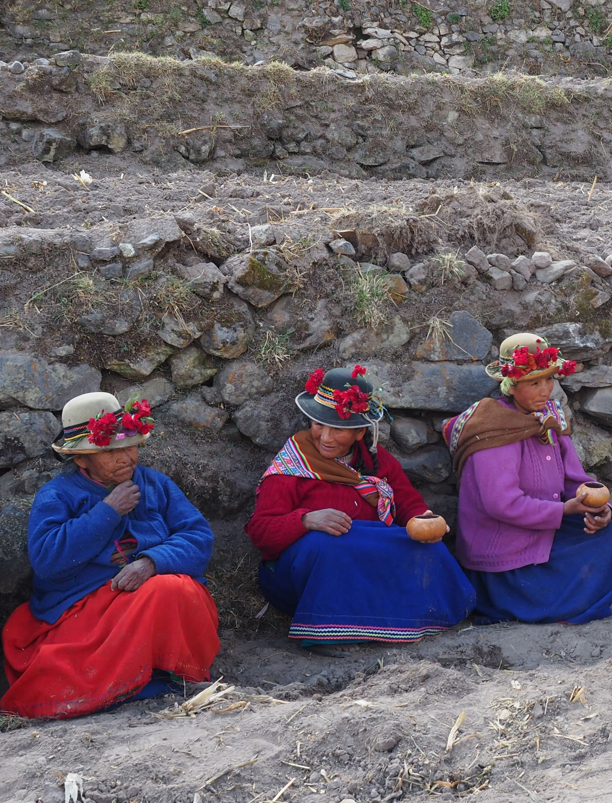

Nomenclature and Local Knowledge in Terraced Agriculture in the Peruvian Andes: An Intercultural Perspective
Affiliations
- 1 CAWR, Coventry University
The Journal of Terraced Landscapes volume 2, issue 1, pp. 38–73 (2026) · Cite this article
- 97 views
- 148 downloads
- DOI10.5281/zenodo.18269342

Abstract
This article presents an appraisal of ideas generated by extant scientific studies and oral testimonies. The focus, nomenclature and local knowledge is a way to highlight the conceptual universe from the perspective of local people in the terms and categories they use in describing and explaining stone walls, irrigation canals, classification of soils and crops. These names convey the meaning attached to the slopes transformed into agricultural terraced landscapes in the Colca Valley in Arequipa, Peru. The acknowledgment of both sources of ideas, scientific and local, follows the purpose of creating wider horizons of understanding terraces within a process of intercultural dialogue by building epistemological bridges between knowledge systems. This is an essential step to bring about fruitful transformations of terraced agriculture in the Andes.
Keywords
- agricultural terraces
- local names
- local knowledge
- Andean region
- intercultural perspective
1. Introduction and Purpose
The reflection on the possibilities of intercultural dialogue is embedded in a scenario of a complex epistemic divide that can be traced by the disruption of Andean Civilization in the XVI century. In this article we deal with contemporary knowledge production on terraced agricultural land focusing on the ideas achieved by scientific and local knowledge systems. Our aim is to widen horizons of conceptual understanding to build epistemological bridges as opportunities to envision the future of terraced landscapes.
Agricultural terraces are visible, material infrastructures in mountainous regions entailing a “world of names, a world of terraces, a world of diversity” (Murtas and Tillmann 2018:28). Terraces are elaborated in singular, unique, diverse cultural forms of perceptions of the environment beyond the simplistic dichotomy between material culture and symbolism, contesting the accepted formula that the landscape is a one-way result of cultural action upon the physical environment. Therefore we propose to rethink agricultural terraces as a dynamic and mutual process by which a particular cultural conception shapes nature and at the same time human transformations resonate on the way knowledge is constructed (Altman and Chemers 1984; Abram 1996; Berkes 1999).
Our objective or concern in this article is to focus on how local names in agricultural terracing disclose cultural perceptions of the physical environment revealing a knowledge and practices attached to specific meanings that uncover values and norms of a cosmovision inextricable link to nature (Toledo 2008; Maffi and Woodley 2010). Taking for granted that no conceptual or terminological system is superior nor can one culture impose or assume its cultural conception upon another, this article proposes an intercultural dialogue (Mall 2000; Dietz 2018). The particularities of intercultural dialogue surpass an exchange of information and validation of facts and introduce us into an epistemic interaction between knowledge systems. This is a process that involves local narratives of people explaining their ideas and beliefs about the environment that might seem “counterfactual” to the modern scientist (Anderson 1996). The spirit of dialogue entails equality between subjects of knowledge with the full capacity to explain the world in their own terms and categories. Therefore the aim of this article is bridging epistemologies between scientific and local knowledge in order to arrive to new understandings of terraced agriculture. The vision ahead is to jointly visualize a repertoire of multiple possibilities for the future of local and global society. It opens democratic and creative opportunities for mutual enrichment of ways of knowing and cultural diversity to overcome the modern crisis (de Sousa Santos 2014).
2. Structure and Methodology
The presentation of the results derive from focusing on two different knowledge traditions: on one hand bibliographical academic studies dealing with the topic Andean terraces and on the other hand relying on testimonies in which local actors engage themselves in making sense of their own construction of their narratives. (Geertz 2000) Therefore this article starts from an overview of contemporary scientific knowledge selecting pioneering perspectives and the ideas that have set the foundations for the achievements of multidisciplinary studies about terraced landscapes.
The second and core section of this article deals with local knowledge. It is dedicated to the presentation of agricultural terraces in local voices. These local knowers describe and explain in their own words, terms and categories the stonewalls, water canals, soils and crops in the communities where they live, Yanque, Cabanaconde, and Coporaque located in Colca Valley, Caylloma, Peru. We also acknowledge particular scientific studies that bring local voices closer to the purpose of establishing epistemological bridges between scientific and local knowledge systems.
This article concludes with a conceptual effort to understand Andean terraces as a process of cultural diversity emphasizing the multiple connotations of the term Pachamama. It is an appeal for more inclusive, symmetrical and empowering relations between science and local knowledge in the future, reflecting upon fruitful ideas actions for intercultural dialogue between scientific modern knowledge and local knowledge.
3. Scientific Knowledge About Andean Terraces
3.1. Denominations of Andean terraces
The following terms in Spanish, Quechua, Aymara introduce a cluster of generic words related to terraced agriculture documented in dictionaries opening the world of names in the past and the present:
Anden, andenes, andenerias: are the Spanish terms for agricultural terraces that appear in chronicles written since the first years of the Conquest of Peru, in the 16th century. These expressions refer to the cultivated terraces, platforms, benches and field staircases; constructed with stonewalls, which covered the Andean mountain slopes. These words are “purest” Spanish and have been incorporated in the common vocabulary of all Peruvians. British historian Markham included in his Quechua-English dictionary the word anden as a Quechua term, but as Juan de Arona explained in 1883 it is an error (de Arona 1974).
Pata: is the Quechua name for terrace, pata-pata for staircase terraces and pata patachani means the action of building terraces. These terms were registered by the Spanish Jesuit priest Diego Gonzales Holguin (1560-1620) compiled in the ‘Vocabulario de la lengua general de todo el Perú llamada lengua Qqichua’ (Vocabulary of Quechua language) published in 1608 in Lima (Gonzales 1952). Pata-Pata: is the Aymara term for retention walls built with stones to avoid soil erosion in the high mountain slopes, registered in Ludovico Bertonio (1555-1628), an Italian Jesuit, who dedicated 25 years of his life to compiling the Vocabulary of Aymara language published in Lima (Bertonio 1612).
Patilla and Pata: are Quechua terms for slopes with agricultural terraces registered in the Reflected Vocabulary of Andean agrarian activities. Agrarian Quechua terminology by Ballón et al. (1992).
3.2. Pioneering sources
O.F. Cook, son of a stonemason and a professional botanist says “the people who did this finest ancient work are not only gone and forgotten, but lack even the distinction of a name” (Cook 1916: 474 ). His seminal works using high quality photographs and vivid scientific descriptions rendered homage to the anonymous builders of Machu Picchu, Pisac, Ollantaytambo, and the terraces around the Vilcanota and Urubamba Rivers. Cook correlated the origin of terraces to societies with most advanced agricultural developments.
Donkin (1979), a British historian and geographer, dedicated his investigations between 1966 and 1969 to study agriculture terraces in the Highlands of Middle and South America. He focused on terracing in different ecological habitats where agricultural societies reached an advanced stage of development as plant breeders in diverse forms of land cultivation.
A corroboration of the diversity of agricultural terraces are the various names used, nomenclature, related to constructions in the New World—some with exclusive defence purposes, others combining defence with agricultural purposes like andenes and pucara in Peru and trincheras in northwest Mexico. Other terrace names meaning “raised fields”, related to agricultural use exclusively, are gradas or graderías, tablones, terraplenes, bancales and llanadas. In the Venezuelan Andes these are known as poyos or apoyos. The Náhuatl word katáltin describes the ancient irrigated terraces above Texcoco in the Valley of Mexico. In Peru and Bolivia, agricultural terraces are named pata, suca, in Quechua and in Aymara taka, takha, takhana in Aymara, the name of humacas are for the terraces with coca cultivation. (Donkin 1979)
Donkin underlines the potential of further investigations in the field of nomenclature, especially in indigenous languages, to disclosure the importance and deeper meanings granted to terraced landscapes. In the Peruvian Andes Donkin identified and described more than one hundred terraced sites providing photos and rich bibliographic sources.
3.3. Andean ecological diversity
In the 1930s, the Peruvian geographer Javier Pulgar Vidal set the foundations for a new approach to understanding the Andean environment. Based on the collection of innumerable names of places, toponymy, from indigenous knowledge and languages, he recognised recurrent pattern of variability. After many years of systematic classification He structured them by areas according to altitude, climatic conditions, flora and fauna, production of crops, and human transformations, resulting in a vertical sequence of eight regional categories (Pulgar Vidal 1981).
This section elucidates Pulgar Vidal’s eight regions: Chala, Yunga, Quechua, Suni, Puna, Janca, Rupa-Rupa and Omagua. Each one is inserted in a delicate web of interconnected elements of reciprocal relationships, underlining the intertwining of nature and culture in the Andes, in which we include that of agricultural terraces.
Chala (0 to 500 MASL) are areas of persistent fog, a longitudinal thin strip of desert along the Pacific Ocean interrupted by 53 transversal rivers flowing downwards from the Andes into the Ocean. It was the habitat of fisher groups, hunter-gatherers who lived more than 10,000 years ago. After many generations these groups gradually domesticated animals and plants such as maize, cotton, lima beans, peanuts, beans, chilli and fruits like lucuma, pacae, palta, camote and developed agricultural knowledge to transform the natural desert into cultivated land.
Chala is the area of the first civilization in the Americas: in 3000 BCE the stone city of Caral was erected with formidable masonry conceived as an agro astronomic calendar system, and the modality of social relationships extended systems of exchange networks with other ecological zones, including the tropical forest (Shady 2008). The Agrorural Inventory establishes that less than 2% of Chala territory is covered with agricultural terraces and all were abandoned a long time ago (Agrorural 2021).
Yunga, is the region of temperate valleys (500–2,300 MASL) located higher than the line of the irrigation channels of the Chala. The narrow gorges of the Yungas are covered with terraces, e.g. in Poma Ticlio, Santa Eulalia and Songos in the Rimac Valley, Pacarán in the River Cañete and elsewhere that continue into the Quechua Region. Probably they demanded the greatest efforts to their builders due to the stony and steep slopes. Some of the retention walls are 2 to 5 m high. The terraces built up the slopes are considered to provide optimal conditions for the crops of the Chala, including the cultivation of coca (Erytroxylum coca). These terraces still impress as hanging gardens irrigated by canals called huayanchas.
The inventory of Agrorural (2021) reports that only 2% of agricultural terraces are located in the Yunga.
Quechua is the temperate zone (2,300-3,500 MASL) that fluctuates in temperature. During the day it gradually reaches 20 degrees Celsius and at night the temperature drops drastically, in the cold season down to 8 degrees below zero. The term is also used for the denomination of culturally diverse groups of people who live in Quechua Valleys.
The agrobiodiversity in the Quechua Valleys is represented by crops like maize (Zea mays), squash (Curcubita moschata), caigua (Cyclandera pedata), granadilla (Passiflora ligularis), llacón (Polymnia sonchifolia), numia (Phaseolus sp.), pashullo (Erithrina edulis), papaya de olor (Carica pubesces) and sacha tomate (Cyphomandra betacea).
Some 80% of agricultural terraces are located in the Quechua region of Central and Southern Peru and probably still in use (Agrorural 2021).
Suni are high and cold areas (3,500 - 4,000 MASL) clearly distinguishable by their rugged relief at the western and eastern flanks of the Southern and Central Cordilleras. The inhabitants of these areas have built stone houses since prehistoric times that endure until the present. Thousands of agricultural terraces have been constructed on these sharp gradients. The term Suni is not applicable in the northern Andes since the mountains are lower, not so cold, humid and not so rough, therefore in the North this zone is named Jalca.
The Suni region is known for its great diversity of Andean crops like mashua (Tropaelum tuberosum), quinua (Chenopodium quinoa), cañigua (Chenopodium canihua, Chenopodium pallidicaule, Chenopodium hastatum), achis (Amaranthus edulis, Amaranthus cadatus), tarwi (Lupinus tauri, Lupinus mutabilis), olluco (Ullucus tuberosus).
An estimated 5% of all agricultural terraces are located in this region, and are rain-fed mainly in Cuzco and Puno where most of them are located and are almost abandoned. In the Suni region of Puno there are also the agricultural systems of Camellones, raised fields and Qochas, water ponds in the plains (Agrorural 2021).
Puna are elevated areas (4,000-4,790 MASL) with extreme daily and seasonal oscillations of cold temperatures, below 0º, and maximum temperatures of 22º and 25º centigrade. The Puna is near the beginning of the Andean snowcaps. This region has a wealth of cultivated and uncultivated varieties of potato (Solanum tuberosum), with other agricultural technological evidence of the Puna as a centre of origin.
Janca (4,800-6,768 MASL) are highest areas at the top of the valleys arranged in a discontinuous cluster of summits covered with white snowcaps in the eastern and western Andean chains. The most famous mountains are Huaytapallana, Sara Sara, La Viuda, Huascarán, Huaylillas, Ampato, Coropuna, Ananea, Palomo, Vilcanota, Yanasinga, Ausangate, Salkantay, Pariaqaqa. Local cultures address them respectfully as Apu, referring to their protective character as providers of local identities within territories. Also attached to the mountains is a symbolic dimension associated with water sources, pakarinas, places perceived as the origin of life (Carrion Cachot 1955).
The Janca are areas of very rich species of grass, herbs, moss and lichens and the region where the vicuñas and alpacas graze since they are best adapted to the cold and high altitude.
Rupa-Rupa is located at the basin of the eastern flank of the Andes, at an altitude ranging between 400 and 1000 MASL. This region of mountains, gorges, hills, slopes, and valleys offers the best conditions for innumerable species of fauna and flora. Some examples of the hundreds of original trees species of the Rupa-Rupa are Sacha -pashullo (Erythrina sp), Hoju (Ficus glabrata) and Huampo (Ochroma lagopus).
According to the Inventory of Agrorural (2021) the ancient agricultural terraces in this zone have been covered by tropical forest.
Omagua is the tropical forest region where the Omaga people live, known also as the region of abundant freshwater fish since the Amazon River flows through it. It is a hot spot of biodiversity with a high concentration of indigenous people, whose knowledge systems contain the key to guaranteeing sustainable living. As such it represents a model of nature and people living harmoniously.
3.4. Agricultural terraces: A growing multidisciplinary field for policy action
In the years after de Agrarian Reform of 1968, the millenary agricultural tradition of Andean terraces entered in the academic debates to propose scientific knowledge to overcome the agrarian crisis.
De la Torre and Burga (1986) compiled an important state of the art of academic articles generated by 20 researchers from different disciplines focusing on raised fields and agricultural terraces, evidencing a rich milestone production of knowledge. These challenging reflections triggered insightful research trends as well as policy action recommendations that still encourage the current debates on alternatives to the agricultural crisis in Peru. Portocarrero (1986) concentrates on the topic of soil erosion affecting the livelihoods of Andean agriculture in mountainous areas as a physical and social problem. The analysis proposes national policies regarding conservation practices, like the agricultural terraces among others, for the promotion of development of Andean territories.
The topic of conservation and abandonment of agricultural terraces edited in 19 research articles reveal an increasing and rich field of studies of the terraces in Andes of Peru (Llerena et al. 2004). The book compiles articles from the point of view of scientists in history, economy, archaeology, anthropology, sociology, culture, ecology, climatology, geomorphology, agronomy, edaphology, hydrology, forestry and technology, and establishes multiple lines of research and action considering old as well as new challenges like climate change and environmental protection. An extensive bibliography about agricultural terraces of the Central Highlands prepared by a multidisciplinary team closes this important state of the art.
3.5. Scientific achievements
For five hundred years, the colonial perceptions of nature summarized with the terms Costa, Sierra, and Selva (Coast, Highlands and Jungle) had prevailed. The work of Pulgar Vidal set a new basis for understanding diversity and variability in the Andean space. The construction of an ecological typology of the Central Andes recovering the local names, renaming the natural regions based on indigenous knowledge can be interpreted as a form of symbolic empowerment. It is a process of rehumanising the landscape, reinforcing the identities of local groups with their environments and the feeling of belonging to the land.
The conceptual frame linking the organization of social relationships with the multifaceted mountain ecology known as Verticality Model guides the logic of maximum use of the diverse regional differences for agriculture and applies in general to Andean agriculture and in particular to agriculture terraces. The ecological models of verticality are a rich intellectual legacy that reinforces and increases the variability of natural conditions at micro scale for the abundance of crop diversity. This human made variability has a key creation in the Andes: the multiple agro astronomical Calendars, technical and ritual based knowledge for the predictability of the climatic conditions. (Murra 2017; Earls and Cervantes 2015; Mayer and Fonseca 1979)
Having in mind the Andean ecological variability of the wide spread spatial distribution of terraces, there are noticeable regional differences product of diverse independent cultural developments (Kendall 2008). For example the andenes of Andamarca in Ayacucho constructed in Huari style masonry prior to the Inca (Aguirre-Morales 2009) disregard the theories that identify the Inca State as the centre of technological diffusion. Throughout the historical development of agricultural terraces there are observable cultural regional differences. Some examples of these differences are recognised in the Inca monolithic masonry of Ollantaytambo (Cook 1916) that contrast with the fine complexity of the terraces from the Cabana and Colla people in the Colca Valley (Cook 1916, Denevan 2002). The terraces in Abancay result from a web of transformative processes of Aymara people, Chanca and Inca influence (van Dalen 2011). The Yauyo people in Huarochiri constructed different regional styles of agricultural terraces absorbing the local knowledge of a mosaic of ethnic groups melted within the course of their evolution (Aguirre-Morales 2008).
One can conclude that terraces are more a matter of a plurality of endogenous regional developments as a process of general expansion of one type of technology (Kendall 2008, Denevan 2002, Cook and Cook 2011).
Another manifestation of diversity is the combination of agricultural systems. For example, in the Chala region terraces, lomas and tendales are similar structures to manage the smooth slopes with specific purposes, which are distinguishable (Canziani 2007). In the higher zones of Quechua, Suni and Puna, one can find a cluster of agricultural systems like Sucacollos: high raised fields, Qochas: water reservoirs, Aynocas: sectorial rotational farming, that share basic ecological traditional knowledge in dealing with climatic variability, water, soils and use of tools (Erikson 2000, Flores Ochoa 1986, Mujica 1979).
We close this section on scientific achievements recognising the conceptual contributions that have generated in-depth studies that provide specific intellectual elements to understand Andean agricultural terraces. These scientific approaches to terraced fields explain the diversity of cultural landscapes in the Andes in terms of the conceptual links between Andean agriculture, environment, society and culture. In the next section we open the opportunities of intercultural dialogue by concentrating on people’s voices, the protagonists who keep the terraces as living landscapes.

4. Testimonies of Local Knowledge on Agricultural Terraces
This section aims at opening an indispensable step for intercultural dialogue between two knowledge systems. It consists in creating the space for local knowledgeable men and women to express themselves in their own cultural terms and categories and construct the world of names and ideas on what and how they know about the terraces they are conducting in their communities. For that purpose we have transcribed and translated each one of the oral testimonies from three videos elaborated by DESCO (2014 a, b, c). In the case of referring to written sources we specify them. The explanations using a world of names about stonewalls, water canals, soils and crops disclosing the uniqueness of local knowledge in the Colca Valley will unravel the challenging attempt to identify epistemological bridges between scientific and local knowledge.
4.1. Dionisio Checa, master rehabilitator of terraces, describes and explains how to maintain stonewalls and aqueducts in his community Yanque, Colca Valley, Caylloma district, Arequipa
This testimony comes from two sources, a written one that was presented at the Second International Conference on Terraces (Tillmann and Bueno de Mesquita 2015), and the other one results from the video Rehabilitación de andenes (Rehabilitation of terraces) (Desco 2014a) in which he walks along the paths of the terraces and water channels in his community explaining his perceptions and ideas.
“Terraces are an ancient technology built many generations ago, a legacy that is worth conserving. The rehabilitation of the terraces is initiated with a pago, an offering to Pachamama, Mother Earth, arranging coca leaves (Erytroxylum coca), chicha (maize beer), fire and burning aromatic herbs on a flat stone. The presence of all the community members is required to renew the rules of reciprocity between Pachamama and the crew of terrace workers called cuadrillas, or waijes, brothers and sisters. There are traditional forms of reciprocity such as minka, ayni, as well as daily payment. The role of women is indispensable - cleaning weeds from the walls and the preparation of food and chicha, so that the crew feels at ease during the work.
An anchaca is a retaining wall built with carefully placed stones, working from the base, from larger to smaller, according to size. Base or cimiento is the foundation of the wall dug 50 cm into the soil. Zapata is the part of the wall above the foundation that reaches a height of approximately 30 cm. Pirca or the body of the wall is the technique of placing irregular stones articulated to the foundation, following the contour of the level, slightly inclined inwards. The width of the body of the wall varies. It decreases as the height of the wall and the size of the stones increases, and the height of the wall depends on the original slope of the terrain. The filtro (filter) of the wall is the arrangement of stones and gravel of different sizes inserted into the wall, which allows water to drain from the terraces. Pata is the embankment, platform or bank of the platform where the crops are grown. It is covered by a top layer of 50 to 80 cm of soil from the hillside or transported from elsewhere. Below this layer of soil, that is, in the subsoil, there are two more layers, one of stones of different sizes, whose function is to drain and another layer of rubble and sand waterproofed with clay soil. Bordo is the 50 to 60 cm high edge made of accumulation of earth that protects the terraces below by stopping excess water from flowing down when we irrigate the platforms.

We distinguish two types of gradients in the platforms, longitudinal and transversal, that are important in ensuring the proper circulation of water so that the water runs and does not escape from the edges. The main irrigation is related to four types of ditches or canals according to the flow of water they carry: The orccoyas distribute water from the head of a sector to three or more terraces. They are made of cobblestones and the water is distributed through inlets, acequias de bajada, which deliver water to both sides of the terraces, and are made of cobblestone and often have paths for animals and people. Pakchas are stone structures that allow the rough water to fall from an upper platform to a lower one where there are k’alchas, the long flat stones that have been placed laterally and at the bottom of the pakchas, to prevent the falling water from damaging the stonewall. They are also channels to cushion the force of the water; they have a double function, irrigation and drainage. Wiqchunas are drainage ditches located at the end of a group of terraces.
Zarupas, charq’eñas and patiqllos are groups of four to six protruding stones that are distributed obliquely along a platform wall. They serve as recessed steps that allow quick access to an upper or lower platform. They also form a visually attractive V shape on the stonewall and the repetition of this motif creates a beautiful order. Pukara is a projecting stairway parallel to the wall with carefully secured stone steps. It is located on the front face of the wall and is used for oxen to access the platform. Jatun Pukara is a transverse staircase that joins several platforms and is located parallel to the descending ditches. It is built of stone in such a way that it avoids water erosion. Jatun Pukara has a dual function, in some cases as irrigation ditch and also a path to give access to agricultural work to farmers and animals.
Utahallas are cobblestone structures located under the agricultural soil. They may have a door in the front of the wall. They are used to shelter from the rain and cold as well as to store agricultural implements. The Piedra Caja is the sacred place of the terraces, where offerings are deposited annually to the Pachamama, Mother Earth, an agricultural ritual of respect and gratitude.”

4.2. Marcelino Llaza Inca describes and explains the irrigation system in Yanque Hurinsaya in the Colca Valley
This testimony comes from the Video Sistemas de riego en andenerías (Irrigation systems in terraced lands) elaborated by Desco (2014b).
“Our water comes from the Nevado Mismi, the snowcap mountain, the source of Yanque Urinsaya’s irrigation system. The spring flows 25 km down like waterfall providing water to the main irrigation ditch. The four Apus, sacred mountains, feed the springs that form the main, old canal called Mismi, which flows into Ccochapata, the pond where water is stored at night. This water is our life, our subsistence. The water continues to flow on Wicchus, Wichunas, bridges, structures that regulate the flow of the spring and serve to divert in case of excess water and also for the cleaning of the irrigation ditch. There are Badenes, carved stone structures above the main canal and Chakas, small bridges that regulate the passage of water and also serve for the transit of people from one end of the canal to the other in the sectors of Chachayllo and Umajala. We keep them clean and in good shape, conservation of these places is important for us.
We also have water coming from the Majes irrigation scheme that is used after the second watering of the field, reducing the applications to once every 15 or 20 days. From Ccochapata the water flows to the boqueron, a place where large stones, mud mixed with balls of greens, are placed to stop and release water to irrigate the different sectors.
All users celebrate Yarq`a Jasp’iy, the annual cleaning of irrigation ditches. It begins on August 1, with a ritual to renew the offering box of the previous year and to forecast the weather for planting. This work-festival lasts four days and three nights, the villagers spend the night on the hill following the guidance of our Yacu alcalde, the water authority. On the fourth day, we all go down to the community where we continue the worship of the water of the Mismi Canal, dancing and drinking chicha. We do it voluntarily and with faith.
Our Yacu alcalde, or regidor del agua, is the communal authority in charge of distributing and controlling the irrigation water from the water intakes in each sector of the terraces. He also coordinates Ccocha Jasp’iy, the cleaning of the ponds’ water inlets twice a year by all water users on the 1 of July and 1 of February. From Ccochapata, our pond, the Yacu Alcalde distributes water on Mondays and Thursdays, according to the location of the Bocatomas, water intakes. The water intakes are named according to the location of the irrigated terraced sectors: Ccolloni, Chersa, Ccacoyo, Mosocchique Canteria, Huancarpampa, Chapirana,.
Mitacion is the order followed by the Yacu Alcalde for the water distribution according to sectors. Water allocation is calculated by the corresponding boqueron, the type of cultivation of the chacras (fields), to the size in topos, the altitude of the fields, to the type of soils according to their water retention ability, and the existing microclimates. Loqme, is the period of fifty or sixty days between the first and second watering of the fields. During the first mitacion, it is the turn of fields planted with maize mixed with alfalfa and fava beans. The second mitacion takes place in the sectors of Chersa, Ccacoyo, Ccolloni and Quiwiña for all the terraces with maize. The last mitacion is for the terraces with potato and barley around November when we are culminating the watering of the terraced fields. This is the inlet of chapirana that distributes the water on both sides of the terraces. We are watering a field, a chacra of four terraces. It is more or less three-quarters of a topo, the ancient measure of the land surface that measures approximately one-third of a hectare. It is taken into account as the unit of irrigation of the terraces per hour. Three-quarters of a topo is irrigated in four or five hours. Each user receives 35 litres per second, at an average of twenty days per agricultural season. A chacra is the cultivation area belonging to a family, which can be spread over one or more terraces.

We irrigate a field by means of the melga, ditch that carries water from one platform to another. Each terrace has a bordo, a ridge of earth at the edge of a platform that prevents the water from falling out along its course. Without bordos our stonewalls would be eroded in a short time. We can see from here that in between two terraces there is a K’alcha, vertical ditch built of cobblestones and flagstones, so that the water falls to the next platform without damaging the wall.
There are also Paqcha structures that allow the water to pass from one platform to another freely, falling to a stone at the base that cushions the precipitation. Tuycu, Saruna, Sarupas are the long stones embedded in the walls to shorten the way from one platform to another without damaging the stonewalls. Orccoya is an old curved canal completely built only with stones that bears the same name of the sector. Umareo is the first irrigation of the crops after sowing.
Some modern agricultural practices are deteriorating our terraces like the use of tractor and chemical inputs, they might destroy the terraces built in the past by our grandparents with a lot of intelligence. We also fear the climate change that is affecting us. We want to maintain our terraces and canals following the tradition of our grandparents, recognizing the values of what they built should last for many coming generations.”
4.3. Juan de Dios Castro Tinta describes and explains the irrigation of the Cabanaconde countryside
The following oral testimony has been transcribed and translated from the video Sistemas de riego en andenerías (Irrigation systems in terraced lands) produced by Desco (2014b).
“Hualca Hualca is the snowcap mountain from where the water for the countryside of Cabanaconde and other towns in the Colca Valley originates. Its waters irrigate the terraces where the Cabanita maize grows. Our ancestors have controlled the water flow of the Hualca Hualca sector in an orderly and organized way to provide water. Since 1995, we have been requesting water from the Majes irrigation system. As we have more or less sufficient water flow we no longer worship Mother Earth, as it should be. The volume of water increases by many snowfalls, I hope that our natural dam of the Hualca Hualca is not drying up. Here we are in Cusqui, the fourth intake of seven places of the water catchment of the Hualca Hualca River for the countryside of Cabanaconde. This is the Canal Matriz that irrigates more than 400 hectares. The Yaku Alcalde is the authority hired by the irrigation commission for water distribution — it is a rotating position between two people who control the water permanently, in shifts of two days and two nights. In the countryside, the water never rests for a moment. The irrigators are the persons who conduct the water in the plot using shovels so that not even a white spot is left, so that everything is well flooded, flooded and soaked homogeneously. In twenty minutes they can irrigate four small plots. Larger plots can be irrigated in forty minutes or half an hour.
Seccana is a sector of narrow terraces where we do not irrigate because we do not grow cabanita maize there. Cusqui is the sector of terraces here in the countryside where the terraces are very wide and we plant cabanita maize. Barbecho is the ploughing of the land before irrigation, either with oxen or tractor. Qarpay, or first irrigation, we let the water enter the fallow land until it is well waterlogged, well wet, well filtered to sow the cabanita maize that grows very well in this countryside.
The borders, the earth piled up and compacted between the stonewall and the embankment, have the function of preventing the water from running off and so soaking the small plot of land is done homogeneously. Apero is a stick plough pulled by oxen with which the furrows are opened to sow the corn after flood irrigation. Furrow Kila, Kowa, second irrigation, after sowing the furrows are flattened and the ground is left well levelled to flood the land when the maize is about twenty centimetres high.
Irrigation is carried out in all sectors, depending on the water flow, the type of crop and the quality of the soil. This is the way our ancestors have taught us and we want to continue this way because it is the best way to maintain our land. Using more water is not in accordance with the customs of our ancestors, but we do have a dream: to finish the old Huatac canal that was left unfinished from the Macura lagoon to Cabanaconde. That would give a guarantee for the life of the new generations.”
4.4. Bridging epistemologies - stone walls and water
These three testimonies in Spanish language with Quechua terms reveal the continuity and changes of Prehispanic knowledge on engineering, architecture and hydraulics as well as the integration of functionality, art and spirituality perceived in the stonewalls and water canals. The knowledge and praxis of maintaining productive the agricultural infrastructure of the stonewalls and the water canals disclose an intimate familiarity and feelings for each minute detail differentiated in more than 25 names of structural elements for canals and walls according to function, shape, size, position, beauty and sound of water when it falls into the stones. Each terraced sector is known with a particular name fitting to type of walls, if they are curved, narrow, or wide, the type of crops that grow, the microclimatic characteristics of the spot, soil quality and the water absorption. All these categories are memorized names through the work experiences in daily live.
The names of the bigger space, the watershed, the snow mountains, the water falls, the water ponds and the immense slopes covered with terraces convey a feeling as if space and the persons were a community of living beings. The on-going celebration of rituals to Mother Earth is therefore indispensable to maintain the balance of stonewalls and water canals in a continuing flow of links between the objective reality and beyond the visible reality. Both realities coexist in one knowledge corpus that use material elements and ritual practices for sustaining the life of all families and terraced plots. Rituals are ways of renewing the rules of reciprocity between humans and nature and among members of society creating an order that guarantee life in the present and for the next generations.
The different and specific names for social rules of reciprocity in the agricultural tasks and the responsible fulfilment of them for the maintenance of stonewalls and canal and the distribution of water are expressed with accentuated self-esteem and empowering awareness. This is a necessary recognition for an intercultural dialogue between knowledge systems.
5. Soils in Agricultural Terraces
Soil classification is a wide spread knowledge learned from early childhood by sensorial observation when children go with their mothers to the fields. They see, touch, smell, play with different earth and notice in which type of soil one or a cluster of crops grow well or where the irrigated fields are more prone to absorb water. The Peruvian anthropologists, Ricardo Valderrama and Carmen Escalante (1988) lived between 1985 and 1988 in the communities of Yanque Hurinsaya and Yanque Hanansaya at the heart of the Colca Valley participating in the work cycles of agricultural terraces and studying the perceptual and cognitive maps of local people. The registered twenty terms used by local people referring to the types of soil that can be found throughout the terraced territory.
5.1. Soil ethno-classification as part of local knowledge corpus
These terms ensemble the logic of the senses in six general categories: temperature, humidity, texture, colour, topography and fertility.
Temperature
Qoñihallpa, warm soil can be found near the riverbanks and in the terraces down below Chirihallpa, cold soils can be found in high flat terrains and in upper terraces
Humidity
Churahallpa or Churana, moist soils Chakihallpa, dry soils
Texture
Sakllhallpa stony soils, scattered in some areas. These soils are very difficult to plough but necessary task before sowing time. Aqohallpa, sandy soils that appears in very reduced parts Llink’ihallpa, clayey soils, very common and can be identified because when it dries is very breakable Hakuhallpa, /Sumaqhallpa, loamy soils are the most predominant and favourite in terraced areas, this type of soils are sometimes transported from far away distances to cover the upper surface of the terrace platforms

Colour
Yuraqhallpa, light soils Qellohallpa, yellow soils Pukahallpa, red soils Ch’umpihallpa, brownish soils Oqehallpa, grey soils Yanahallpa, black soils
Topography
Pampahallpa, soils at the river bank plains Patahallpa, soils on the terraces Andenhallpa, soils at the river banks climbing into the high plains and the mountain slopes Qathahallpa, soils at the gradients, are very seldom fields located between plains and terraces that have hummock, small elevations of earth
Fertility
Tulluhallpa, thin soils very sandy stony, they moisten easily but retain water a very short time. They need longer and affluent irrigation. They are very productive, only alfalfa, peas and barley grow well in these soils. Wirahallpa, rich soils in clay, they are black and loamy. They do not absorb quickly the water therefore these soils are irrigated with moderation but for longer time. They retain water very efficiently. Crops like maize, fava bean, oat and potato grow very well in these types of soils. Saliwa means the combination of hot, humid, clayey, light qualities of soil in terraces where maize grows better. Chalhuanca combine cold, humid clayey, red, high plains characteristics of soils in terraces where potatoes grow better.
5.2. Bridging epistemologies and soils
The interest of linguistic studies in soil coincides with local knowledge. For example, a report on agricultural patrimony in Quechua agricultural areas of Puno, Huancayo and Cajamarca, identified more than one hundred fifty names of soils. They are listed, translated and explained under the general categories of topography, material, content and type of terrain and the combination of the Quechua terms Allpa, Hallpa for soil in the high slopes. The numerous soil vocabulary express a rich and complex Andean knowledge of people, who still farm the fields according to their local culture, appreciated by a meticulous taxonomic and semantic analysis (Ballón et al. 1992: 48-70).
The soil scientist Sandor (2006) studied Andean local soil terminology. He found over 50 names for soils resulting from a process of many generations working in and learning from the physical environment that provides the key in the long lasting sustainability of agricultural terraces. Sandor elaborated the over 50 names for soil classification systems in a four-tiered taxonomy, which shows how closely intertwined are soil stewardship and knowledge also affirmed in the traditional ritual agricultural practices in the productive cycle.
6. the Diversity of Crops Growing in the Terraces
The last two testimonies present and explain the great diversity of food crops in the terraces. The first testimony is from Marcial Sulco Mamani, from the community of Coporaque (Desco 2014c). The second testimony by Flora Evarista Chuquicondor comes from her presentation in the Second World Congress on Terraces in Cuzco (Tillmann and Bueno de Mesquita 2015) and the video Conservación de la agrobiodiversidad en andenes (Conservation of agrobiodiversity on the terraces) produced by DESCO (2014c).
6.1. Marcial Sullco Mamani presents the conservation of agrobiodiversity in the community of Coporaque
We raise microclimates with the construction of terraces where 80% of our crops grow. There are terraces in the lower areas, where water is not scarce, so we plant maize. There are extensive terraces where we grow beans and barley. Quinoa, quiwicha, oca, olluco are grown exclusively in the high terraces of Jamallalla, the sector where the terraces are of low height, in Jaira where the stairway terraces have walls 7 meters high that if we do not take care of them, they will deteriorate, which would be a shame because they were made by the ancient settlers, and in the sector of Toqo stairway where the water comes directly from the springs. In the high part on the side of Choccpayo and Amallallo, native potatoes, olluco, isaño and oca are grown there.
Our terraces are very important because there we grow many varieties of native potatoes, each with its own name such as peruanita, serranita, yellow, huaccrahuaccra, huayro, cuchiaca, cachunwacachi, sica, white, ccompis, as well as other tubers like olluco, oca and mashua grow in association and all varieties are eaten prepared in delicious dishes. The black oca, yanaoca is eaten raw and is medicinal. Quinoa, we have different names for its colours: yellow, white, orange, cream, and each one tastier than the other. Peas, beans and barley also have their names for their colours and shades and all are edible.
The varieties of maize have hundreds of names according to their colours and the mixture or combination of colours. The names also vary according to their degree of sweetness, their local culinary use for cancha, roasted corn, or chicha, maize beer, their medicinal value and their association with other crops. Tinkasara are different varieties of maize used for rituals of gratitude, to the water and to Mother Earth.
6.2. Flora Chuquicondor presents and explains how and why she conserves agrobiodiversity in Cabanaconde
The pre-Inca terraces were built by our ancestors Collaguas and Cabanas. They are distributed from 2,000 MASL Tapay terraces, to 3,800 MASL Tuti terraces. In this region of pampas and slopes where the terraces are located, thanks to many types of soils and microclimates, the farming families of the Colca Valley have been conserving and revaluing our crops to ensure our daily food supply. Above 3,800 MASL we conserve many species and varieties of native potatoes, quinoa, ocas, mashuas, ollucos, beans, maize. Each one has its original name and its diverse forms of use. Generally we sow for our own consumption, because to sow in large quantities we lack the market and the diffusion of the importance of these crops in food. For example, quinoa, which has just recently been given value, was previously marginalized like other crops. From 3,000 to 3,400 MASL we have a production area where Cabanita maize dominates, it is the only one in the whole region of Arequipa and of Peru. This variety has genetic characteristics such as its sweetness, its colours, sizes and forms of use. It is perfectly adapted to the temperatures of Cabanaconde, to its soils and to the water with which it is irrigated. It is also the product of a particular management that has been practiced before the Incas, preserving the ancestral wisdom until today. The diversity of 42 ecotypes of this maize has made possible a natural pest control. There are varieties of maize that respond better to sheltered areas, others to temperate zones and others that resist frost, as well as varieties that respond to soil types and water scarcity. Maize is the basis of our economy and our diet. People from other towns come to barter, that is, to exchange products such as maize for meat, fruits, vegetables, and so we do not lack anything in Cabanaconde.

We strictly comply with the agricultural cycle that begins in June with the early fallow. Then in mid-August we sow with the best seeds. Each agricultural work is accompanied by a ritual called the Muju Tinkuy, the sowing of seeds, which celebrates a pago, offering to the earth, honouring the Apus Hualca Hualca and Kallimama. We have to take care of the planting, doing all the nurturing of the crop. After six months we can already taste what we have sown, the first maize, for which we thank our patron saint the Virgin of the Candelaria. The final harvest is done in May, cutting the whole plant and taking it to the chaleras, storerooms, from where we supply ourselves little by little during the year.
Our life, the life of all the people of Cabanaconde is tied to maize, even our way of dressing, our way of speaking, our culinary customs, everything is around this crop. We want to continue planting because it is part of our life. The market does not recognize our efforts to produce healthy, organic products. The State offers us support but only for the so-called profitable crops. We are resisting, but I don’t know for how long, because what would Cabanaconde be without our maize crops?
6.3. Bridging epistemologies and crops
The Colca Valley terraces might have sustained at least 71,000 people in 1520 (Cook and Cook 2011). At present time the population of the Colca Valley consists of 80,000 people who still rely on terraced systems for the production of a great diversity of food crops for their subsistence. The production of food crops depends on the understanding of the mountain slopes according to space and time categories. Agricultural work requires a sophisticated knowledge about soil classification in the higher or lower location of the terraces, the size and shapes of stonewalls, the correct orientation according to the sun. The precise timing for sowing and giving the particular attention and care that each crop deserves during the productive cycle is established in local agricultural calendar systems based on agro-astronomic observations in the past and the present. They have been studied as a central cognitive frame for the material and symbolic organization of space and time (Earls and Cervantes 2015; Zuidema 2010). The on-going processes of interpretation of the signs from the environment are still applied in the present agricultural practices by most of the rural communities. Shared values and emotional ties to agriculture in the past and the present nurture agro-biodiversity as the source of food for Andean society in a process of more than 10,000 years (Cabieses 1995, Leon 2013).
Andean societies have a knowledge repertoire of almost 4,400 native plants. They are used for 49 purposes, for example, 782 are food species and 1,300 medicinal species. From all native plants, 182 are domesticated and 1,700 are cultivated and are growing widely in the Andean territory. Approximately a diversity of 175 indigenous domesticated species are still cultivated in the Andean Region (Brack-Egg and Teccsi 2005). Rural communities continue to produce numerous species Andean terraces like maize, quinua, potato, oca, kañigua, tarwi, olluco, mashua together with introduced cultivars like fava beans, alfalfa, peas and various fruit species. The extraordinary abundance of crop varieties that are found in the terraced fields has called the attention of agronomists who study agro-biodiversity as a process of in-situ conservation of genetic material in a natural population of plants (Tapia 1999).
This wealth of plant resources is the fundamental column of a great diversity of culinary culture, local gastronomies that demonstrate wisdoms and practices (Alvarez 2005, Coe 2004, Canepa 2011) to sustain material life as well as a cohesive symbolic function in society (Salas Carreño 2019). Such abundance of food crops demonstrates local intellectual capacity to understand and establish dynamic and intimate relationship to nature to support their lives with dignity and diversity. The continuity of terraced agriculture poses the moral imperative of Food Sovereignty (Salas 2013) a paradigm directly related to the rights of the farmers to maintain and transform their cultural ways of understanding nature by practicing agriculture for life plenitude. Food Sovereignty entails a major social and political endeavour with thoughtful implications to design joint actions on a basis of common, and transformative knowledge: social equality and cognitive justice.

7. Conclusions
In this article we have presented an overview of multidisciplinary achievements of scientific studies about agricultural terraces as well as the knowledge expressed in the local terms used in the rehabilitation of stonewalls, aqueducts, classification of soils and the conservation of agro biodiversity
The understanding of nature and the social practices of agricultural terraces sustaining life has been presented in multiple names that reveal how local people think and process their terraced environment. By mean of intercultural dialogue, a human interface between subjects of knowledge belonging to different epistemological traditions and knowing forms we practiced the opportunity to build epistemological bridges between scientific studies and the local testimonies, a knowledge encounter transmitting messages beyond the factual information. Finally, we close this article with a reflection of the term Pachamama, Mother Earth, whose presence is addressed in the habitual practice of rituals of every transformative actions of agriculture revealing a cognitive and affective integration of nature and local minds. Different translations tell us that Pacha is the notion of space and time: integrity, absolute identity (Taylor 1987:31). Pacha: is time, earth, place (Gonzales Holguin 1952 : 268). Pacha: is the surface of the earth globe, world and time, and Pachamama1: the world, space, place where humanity and the family live (Ballón 1992: 41).
According to Mujica (2016) the term Pachamama has two roots. Pacha is one of the most complex categories in Quechua language. It means space, time and identity. With this one word one can denote the here and now as well as the belonging here. The root Mama means origin, life giving, life sustaining. Mama is also associated to generating, protecting and nurturing.
Pachamama in the context of the testimonies on agricultural terraces refers to the space, the time and identity of all existing as well as the process of all living beings in one place and time, slopes, stones, water, soils and crops. It can be understood as nature, since it is where one is, who you are and the way you exist. Pachamama is the reality that comprises the unity of space and time.
The terms up there and down below are the fundamental dimensions of space in a mountainous region. They set an order for the construction of walls, the distribution of water with canals, as well as the sustainability of soils and conservation of crops. Up there and down below encompasses the familiar and endearing space where people lived in the past, in the present and in the future. It designates life and living in an historical process. Slopes, stones, water, soils live as well as plants, animals, human and nature, all have the capacity to survive in time and space where nothing is hazardous. There are established rituals, traditions, behaviours and rules that ensure life continuity celebrating different forms of reciprocity with nature and among humans, all necessary to sustain life. In daily agricultural life, local people consider potatoes or maize, other crops as well as non - domesticated plants as living beings that have names. But crops can not move, therefore agriculture is understood as a nurturing caring action, of releasing the existing life potential of the plants. Animals and humans can move, eat, reproduce and take care of their offspring. But only humans live with life awareness that everything is alive, that Pachamama, nature, exists. If for some reason humans attempt against what exists it would damage the own existence and life. Pachamama is the conceptual and practical support and the very existence of life. If we put Pachamama in danger we would be risking our very existence and life. Not taking care of Pachamama or not attending her would be selfdestructive.
In the words of Flora: “what would be of Cabanaconde without our maize crops?” she is remarking that terraces are transcendental for local life and history. Crops might be exposed to changes and alterations as it has occurred in time, but never missing or neglecting its diversity. The existence and life of people in diversity is the greatest fortune, its loss means a fall in disgrace. The knowledge of the elders whose existence and life applied to the stones, water canals, soils and crops created a multidimensional wellbeing which is worth to pass it down to the future generations.
The future of terraced agriculture envisions intercultural dialogue as a global opportunity for cognitive justice to the makers and inheritors of terraces. They are key actors of the transformations of living landscapes, a source for diverse cultural identities with multiple forms of intimate relationships to nature.
Acknowledgement
Dayaneetha da Silva (RIP), thank you for the encouragement to write this article.
References
- Abram, D. (1996) The spell of the sensuous. Perception and language in a more-than-human world. New York: Vintage Books
- Agrorural (2021) Andenes para la vida. Inventario y caracterización de andenes en los Andes tropicales del Perú. Cusco: Centro Bartolomé de las Casas
- Aguirre-Morales, M. (2008) Arqueología e historia de los pueblos Yauyos en las cabeceras del río Mala, in: Pinedo, Tantalean: Arqueología de la costa centro sur peruana. Lima: Avqi Ediciones
- Aguirre-Morales, M. (2009) Excavaciones en los andenes de Andamarca, Cuenca del río Negromayo, Lucanas, Ayacucho. Arqueología y Sociedad, No 20, p. 223 – 267
- Altman, I. & Chemers, M. M. (1980). Culture and environment. Monterey: Brooks/Cole Pub. Co.
- Alvarez Novoa, I. (2005) Cocinas regionales del Perú, in: Alvarez: Desde los Andes al mundo, sabor y saber. Primer Congreso para la preservación y difusión de las cocinas regionales de los países andinos, Lima: Universidad San Martin de Porras
- Anderson, E. N. (1996) Ecologies of the heart. Emotion, belief and the environment. New York: Oxford University Press
- Ballón Aguirre, E.; Cerrón-Palomino, R.; Chambi Apaza, E. (1992) Vocabulario razonado de la actividad agraria Andina. Terminología agraria quechua. Cusco: Centro Bartolomé de las Casas
- Berkes, F. (1999) Sacred Ecology: Traditional Ecological Knowledge and Resource Management. Philadelphia: Taylor & Francis
- Bertonio, L. (1612) Vocabvlario dela lengva aymara: Primera y segvnda partes (Dictionary of the Aymara language: First and second parts) Lima
- Brack-Egg, A.; Bravo Teccsi, F. (2005) Perú: legado milenario = millenary legacy. Lima: USMP
- Cabieses, F. (1995) Cien siglos de pan. 10,000 años de alimentación en el Perú. Lima: CONCYTEC
- Cánepa Koch, G.; Hernández; Biffi; Zuleta (2011) Cocina e identidad. La culinaria Peruana como patrimonio cultural inmaterial. Lima: Ministerio de Cultura
- Canziani Amico, J. (2007) Paisajes Culturales y Desarrollo Territorial en los Andes. Lima: Departamento de Arquitectura, PUCP
- Carrión Cachot, R. (1955) El culto al agua en el antiguo Perú. La paccha elemento cultural Pan-andino. Separata of Revista del Museo Nacional de Antropología y Arqueología. Vol. II, No. 1
- Coe, S. (2004) Las primeras cocinas de América. Mexico, Fondo de Cultura Económica
- Cook, N. D.; Cook A. (2011) Los hijos del volcán. Dualidad Andina en el Valle del Colca. Arequipa: Ediciones El Lector
- Cook, O.F. (1916) Staircase farms of the ancients, in: National Geographic Magazine 29:474-534
- de Arona, J. (1974) Diccionario de peruanismos, Tomo 1. Lima: Peisa
- De la Torre, C.; Burga, M. (1986) Andenes y camellones en el Perú Andino. Historia, presente y futuro. Lima: CONCYTEC
- de Sousa Santos, B. (2014) Epistemologies of the south. Justice against epistemicide. Boulder: Paradigm
- Denevan, W. (2002) Cultivated landscapes of native Amazonia and the Andes. Oxford: Oxford University Press
- Desco (2014a) Rehabilitación de andenes. Video en Youtube: https://www.youtube.com/watch?v=57imrhSWv14
- Desco (2014b) Sistemas de riego en andenerías. Video en Youtube: https://www.youtube.com/watch?v=1c2WI9CNk9w&t=940s
- Desco (2014c) Conservación de la agrobiodiversidad en andenes. Video en Youtube: https://www.youtube.com/watch?v=6-jPznAfNeA&t=88s
- Dietz, G. (2018) Interculturality. in: Callan, H. The international encyclopedia of anthropology. Hoboiken, New Jersey: John Wiley & Sons
- Donkin, R. A. (1979) Agricultural terracing in the aboriginal New World. Tucson, Arizona: Viking Fund publications in anthropology #56
- Earls, J.; Cervantes, G. (2015) Inka cosmology in Moray. Astronomy, agriculture, and pilgrimage. In: Shimada, Izumi: The Inka Empire. A multidisciplinary approach. pp. 121 - 145. Austin: University of Texas Press
- Erickson, C. L. (2000) The Lake Titicaca Basin: A Pre-Columbian Built Landscape. In D. Lentz (Ed.), Imperfect balance: Landscape transformations in the Precolumbian Americas (pp. 311-356). New York: Columbia University Press
- Flores Ochoa, J. (1986) Agricultura en Lagunas (qocha) in: De la Torre, Carlos; Burga, Manuel Andenes y camellones en el Perú Andino. Historia, presente y futuro.,Lima: CONCYTEC
- Geertz, C. (2000) Available light: anthropological reflections on philosophical topics. Princeton: Princeton University Press
- Gonzalez Holguin, D. (1608, ed. 1952) Vocabulario de la lengua general de todo el Perú llamada lengua Qquichua o del Inca. (9th edition). Lima: Instituto de Historia, UNMSM
- Kendall, A.; Rodríguez, A. (2009) Desarrollo y perspectivas de los sistemas de andenerías en los Andes Centrales del Perú. Cusco: Centro Bartolomé de las Casas
- León, E. (2013) 14,000 años de alimentación en el Perú. Lima: USMP
- Llerena, C.; Inbar, M.; Benavides, M. (2004) Conservación y abandono de andenes. Lima: UNALM, U. de Haifa,
- Maffi, L. and E. Woodley (2010) Biocultural Diversity Conservation: A Global Sourcebook. London: Earthscan
- Mall, R. A. (2000) Intercultural philosophy. Lanham: Rowman & Littlefield
- Mayer, E; Fonseca C. (1979) Sistemas agrarios en la cuenca del río Cañete. Lima: ONERN
- Mujica Barreda, E.(1997) Los andenes de Puno en el contexto del proceso histórico de la cuenca norte del Titicaca. Lima: La Molina
- Mujica Bermúdez, L. (2016) Pachamama Kawsan. Hacia una ecología andina. Lima: INTE-PUCP
- Murra, J. (1978) La organización económica del estado Inca. Mexico: Siglo XXI
- Murra, J. (2017) Reciprocity and Redistribution in Andean Civilizations. The 1969 Lewis Henry Morgan Lectures. Chicago: HAU Books
- Murtas, D.; Tillmann, T. (2018) The International Terraced Landscapes Alliance: a collaborative network to value a common heritage, in: Alberti, F. et alii: Terraced Landscapes: Choosing the future. Venice: Regione de Veneto
- Pinto Calaca, I.Z. et alii (2018) La naturaleza como sujeto de derechos: análisis bioético de las constituciones de Ecuador y Bolivia. Revista latinoamericana de bioética, 18(1), p. 155-171
- Portocarrero, J. (1986) Andenería, conservación de suelos y desarrollo rural en los Andes Peruanos. Lima: Fundación Friedrich Ebert
- Pulgar Vidal, J. (1981) Geografía del Perú. Las ocho regiones naturales del Perú. 8th edition. Lima: Editorial Universo
- Salas Carreño, G. (2019) Lugares parientes. Comida, cohabitación y mundos andinos. Lima: Fondo Editorial PUCP.
- Salas, M. (2013) Voices and Flavours from the Earth. Visualising Food Sovereignty in the Andes, London: International Institute for Environment and Development. Available at: www.iied.org/voices-flavours-earth-food-sovereignty-andes.
- Sandor, J.; Winkler Prins, A.; Barrera-Bassols, N.; Zinck, A. (2006) The heritage of soil knowledge among world's cultures, in: Warkentin, Benno: Footprints in the soil. People and ideas in soil history, pp. 43 – 85. Oregon: Oregon University
- Shady, R.; Kleihege, Ch. (2008) Caral. La primera civilización de América. Lima: Universidad de San Martin de Porres
- Shimada, I. (2015) The Inka empire. A multidisciplinary approach. Austin: University of Texas Press
- Tapia, M. (1999) Agrobiodiversidad en los Andes. Lima: Friedrich Ebert Stiftung
- Taylor, G. (1987) Ritos y tradiciones de Huarochirí. Manuscrito quechua de comienzos del siglo XVII. Lima: IEP-IFEA
- Tillmann, T.; Bueno de Mesquita, M. (2015) II Congreso Internacional de Terrazas. Encuentro de culturas y saberes de terrazas del mundo. Cuzco: CBC – JICA
- Toledo, V. M.; Barrera-Bassols, N. (2008) La memoria biocultural. La importancia ecológica de las sabidurías tradicionales. Barcelona: Icaria
- Travick, P. (2003) The struggle for water in Peru. Comedy and tragedy in the Andean Commons. Stanford: Stanford University Press
- Valderrama, R.; Escalante, C. (1988) Del Tata Mallku a la Mama Pacha. Riego, sociedad y ritos en los Andes Peruanos. Lima: DESCO
- Van Dalen, P. (2011) Arqueología prehispánica tardía de Caraybamba, Aymaraes, Apurimac. Asentamientos y andenerías. Lima: UNMSM
- Zuidema, T. (2010) El calendario Inca. Tiempo y espacio en la organización ritual del Cuzco. La idea del pasado. Lima: Congreso del Perú, PUCP
Notes
- The term Pachamama (framed in the philosophy of El buen vivir, Good Living) in the constitutions of Ecuador (2008) and Bolivia (2009) acquire the normative legal character of subject of rights, a paradigmatic change beyond the scope of this article. (Pinto Calaca 2018)
Rights and permissions
Open Access. This article is licensed under a Creative Commons CC BY 4.0 license, which permits use, sharing, adaptation, distribution and reproduction in any medium or format, as long as you give appropriate credit to the original author(s) and the source and indicate if changes were made.
About this article
Cite this article
Salas, M. (2026). Nomenclature and Local Knowledge in Terraced Agriculture in the Peruvian Andes: An Intercultural Perspective. The Journal of Terraced Landscapes, 2(1), 38–73. https://doi.org/10.5281/zenodo.18269342
- Published
- January 2026
- Issue
- Volume 2, Number 1
- Journal
- The Journal of Terraced Landscapes, ISSN 2754-7612 (Online)
- Archive
- Zenodo record 18269342
- agricultural terraces
- local names
- local knowledge
- Andean region
- intercultural perspective